Método STY, papel machê
Aprenda com Simone Strey a transformar papel e papelão em peças resistentes, do chaveiro ao móvel.
Introdução, 7 módulos em vídeo, PDF completo e certificado.
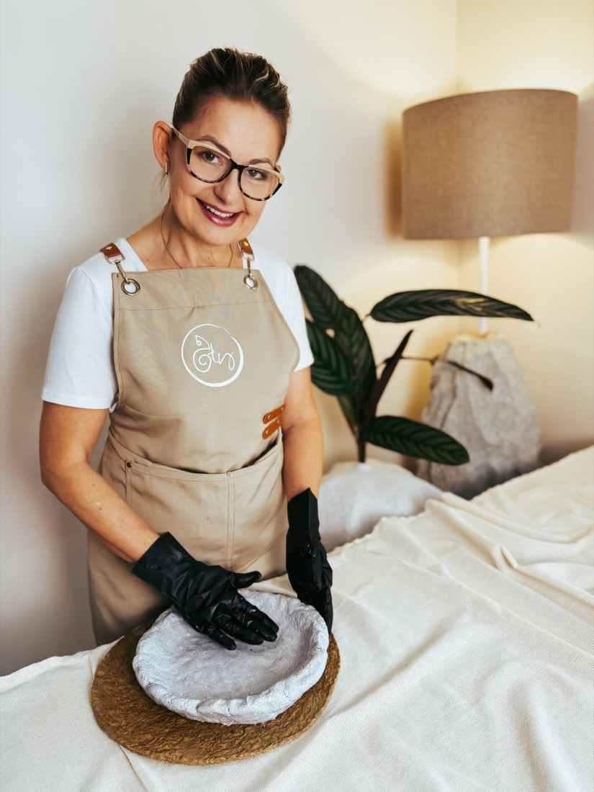
Um método, muitas possibilidades
A resistência vem de um impermeabilizante artesanal que a Simone criou e mistura à massa de papel reciclado.
Com a mesma técnica você faz bandejas, vasos, bowls, objetos decorativos e até peças grandes. A massa pode ser de papelão ou de papel branco e, depois de pronta, ganha aparência de pedra, mas é toda de papel.
Peças que parecem pedra
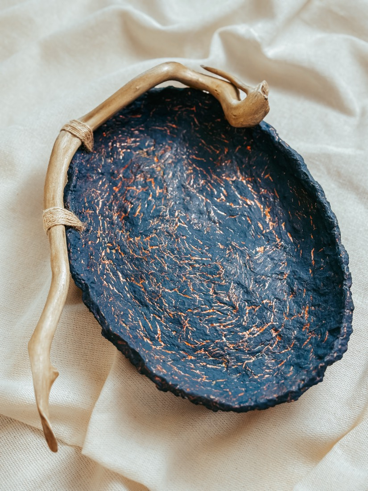
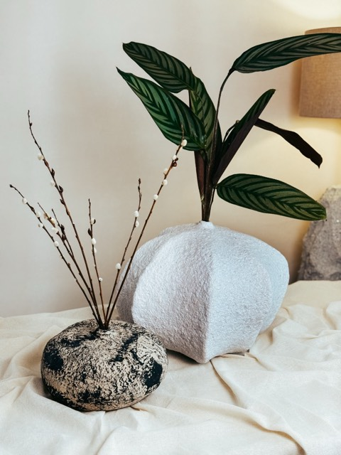


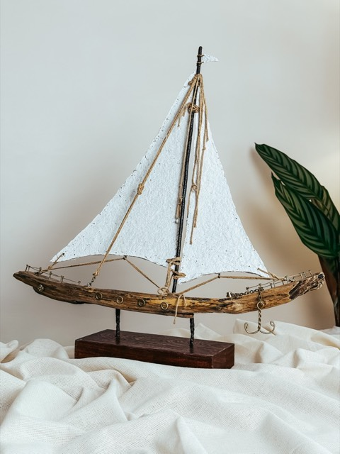
8 aulas, do papel à peça pronta
Assista na ordem: Introdução e Módulo 1 ficam disponíveis na aprovação, e os módulos seguintes são liberados diariamente. Cenas reais de cada aula:
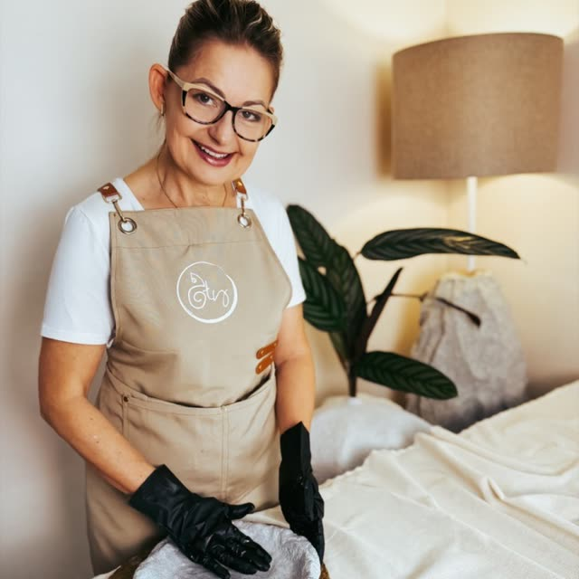
Introdução
Boas-vindas e apresentação do Método STY.
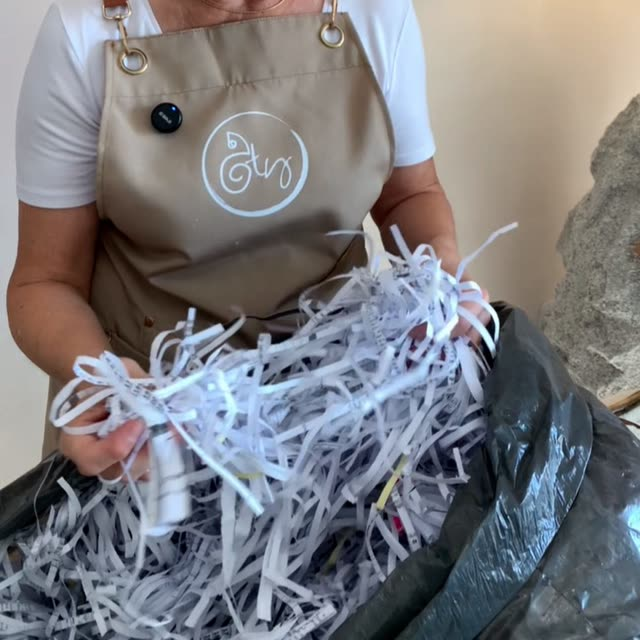
Tipos de papéis
Os diferentes papéis e como escolher o que serve melhor para a sua peça.
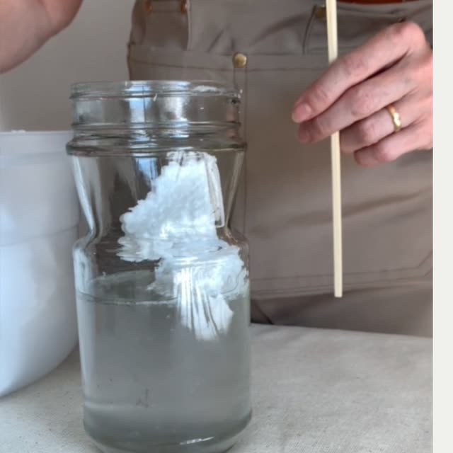
Impermeabilizante
A parte mais importante do método: o preparo que dá resistência à massa.
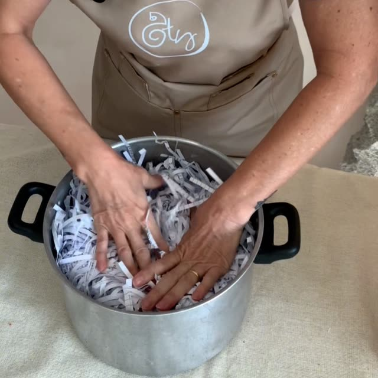
Preparação dos papéis
Pesagem, molho e fervura do papel branco e do papelão.
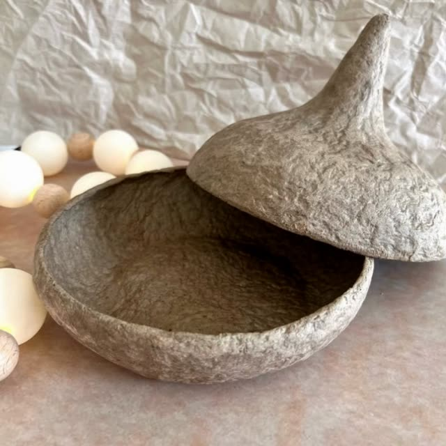
Criação de moldes
Como criar seus próprios moldes com criatividade e baixo custo.
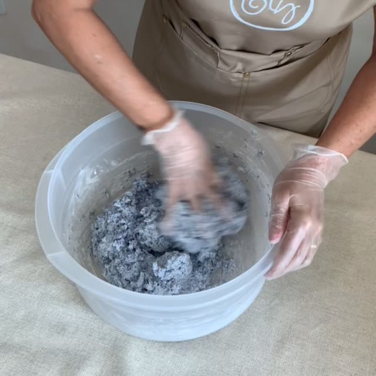
Preparação da massa
A receita e o preparo da massa do Método STY.
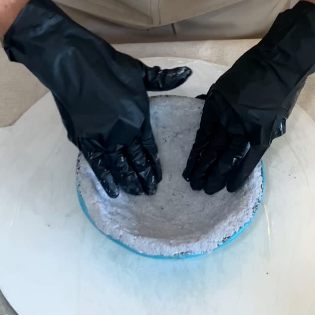
Moldagem das peças
Moldar e dar vida às peças, com técnicas de alisamento e acabamento.
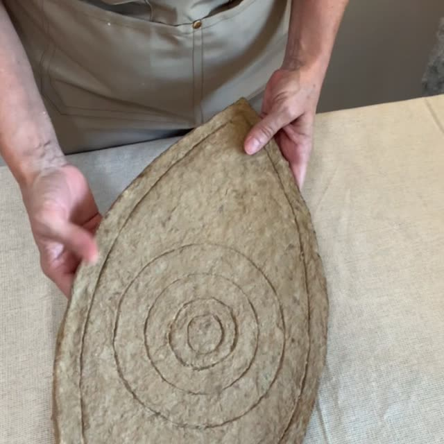
Desenformagem e acabamento
Desenformar, secar, fazer reparos e o acabamento final.
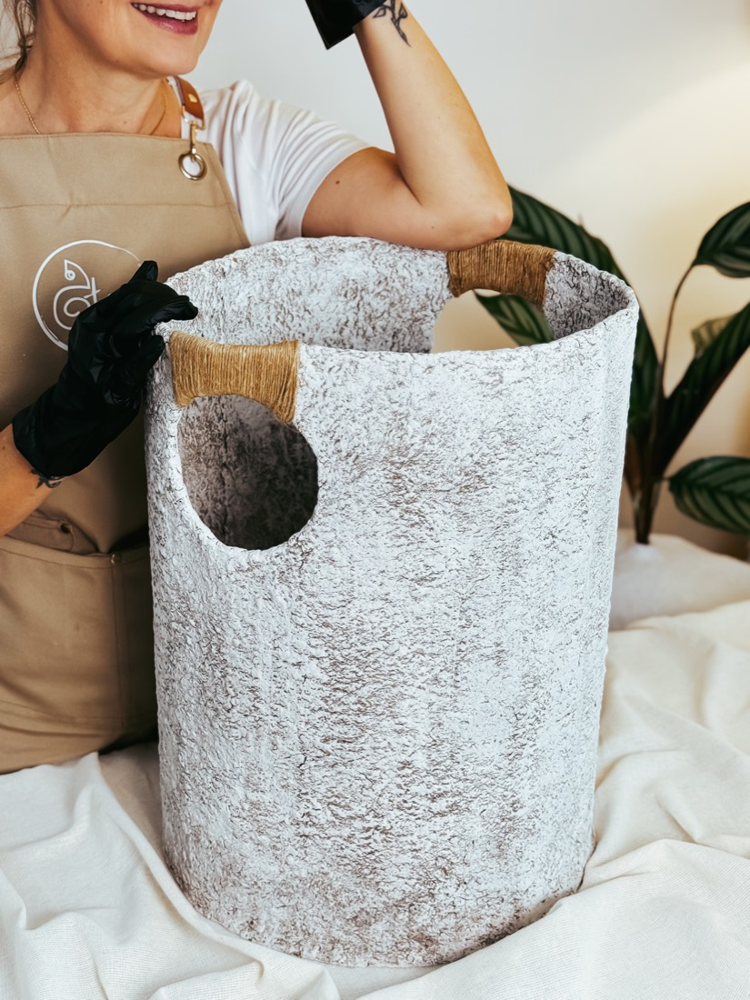
Simone Strey
Professora e criadora do Método STY.
Ela desenvolveu a própria massa ao misturar um impermeabilizante artesanal com materiais reciclados. No curso, mostra o passo a passo completo, da escolha do papel ao acabamento, para você criar as suas peças.
Comece o Método STY
- 8 videoaulas, da introdução ao acabamento da peça, liberadas em sequência.
- PDF completo do Método STY, com o conteúdo das aulas e o bônus de precificação das peças. É liberado no 7º dia.
- Certificado de conclusão com o seu nome.
As inscrições abrem no lançamento.
Pagamento e acesso à área do aluno pela Kiwify. Cursos extras são vendidos separadamente.
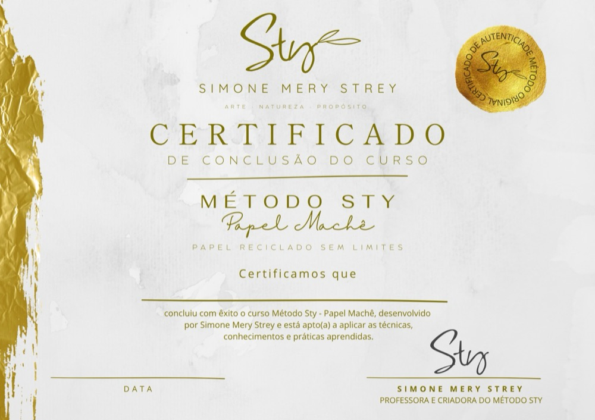
Prévia ilustrativa da arte do certificado.
Dúvidas frequentes
Como recebo o acesso?
Depois da compra aprovada, a Kiwify envia o acesso à área do aluno para o e-mail informado no pagamento.
Em que ordem devo assistir?
Na ordem do curso: Introdução e Módulo 1 ficam disponíveis assim que a compra é aprovada. Depois, um novo módulo é liberado por dia, sem bloquear os anteriores. O PDF completo é liberado no 7º dia.
Preciso ter experiência?
O curso mostra o processo inteiro, da escolha dos papéis ao acabamento da peça, um módulo de cada vez.
Recebo certificado?
Sim. Ao concluir o curso, você recebe o certificado de conclusão do Método STY, Papel Machê.
Os outros cursos da Simone estão incluídos?
Não. Os cursos extras, como o Cortador Artesanal de EPS e o Liquidificador Artesanal Gigante, são vendidos separadamente. A compra do Método STY dá acesso ao curso de papel machê descrito nesta página.